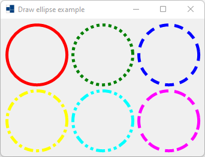
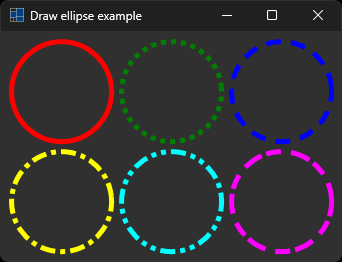
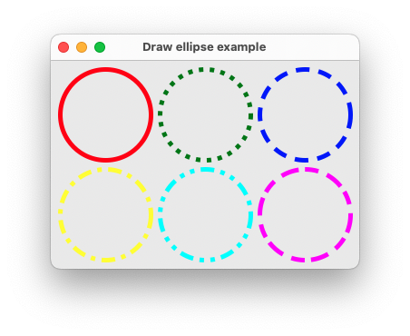
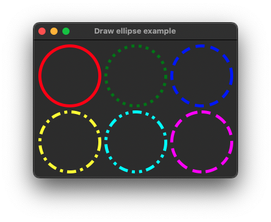
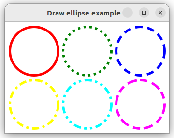
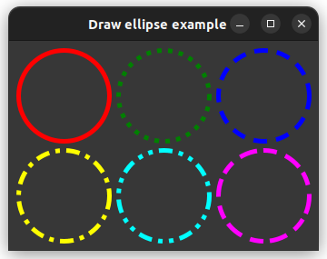

|
xtd
0.2.0
|
Loading...
Searching...
No Matches
draw_ellipse.cpp
shows how to draw ellipse in paint event using xtd::drawing::graphics::draw_ellipse.
- Windows
- 

- macOS
- 

- Gnome
- 

#include <xtd/forms/application>
#include <xtd/forms/form>
using namespace xtd::drawing;
using namespace xtd::forms;
namespace draw_ellipe_example {
public:
form1() {
text("Draw ellipse example");
client_size({340, 230});
}
protected:
form::on_paint(e);
e.graphics().draw_ellipse(pen {color::red, 5}, 10, 10, 100, 100);
auto dot_pen = pen {color::green, 5};
dot_pen.dash_style(dash_style::dot);
e.graphics().draw_ellipse(dot_pen, 120, 10, 100, 100);
auto dash_pen = pen {color::blue, 5};
dash_pen.dash_style(dash_style::dash);
e.graphics().draw_ellipse(dash_pen, 230, 10, 100, 100);
auto dash_dot_pen = pen {color::yellow, 5};
dash_dot_pen.dash_style(dash_style::dash_dot);
e.graphics().draw_ellipse(dash_dot_pen, 10, 120, 100, 100);
auto dash_dot_dot_pen = pen {color::cyan, 5};
dash_dot_dot_pen.dash_style(dash_style::dash_dot_dot);
e.graphics().draw_ellipse(dash_dot_dot_pen, 120, 120, 100, 100);
auto custom_pen = pen {color::magenta, 5};
custom_pen.dash_style(dash_style::custom);
custom_pen.dash_pattern({4, 1, 3, 2});
e.graphics().draw_ellipse(custom_pen, 230, 120, 100, 100);
}
};
}
auto main()->int {
application::run(draw_ellipe_example::form1 {});
}
Defines an object used to draw lines and curves. This class cannot be inherited.
Definition pen.h:35
xtd::drawing::dash_style dash_style() const noexcept
Gets the style used for dashed lines drawn with this xtd::drawing::pen.
Represents a window or dialog box that makes up an application's user interface.
Definition form.h:52
Provides data for the xtd::forms::control::paint event.
Definition paint_event_args.h:28
The xtd::drawing namespace provides access to GDI+ basic graphics functionality. More advanced functi...
Definition actions_system_images.h:11
The xtd::forms namespace contains classes for creating Windows-based applications that take full adva...
Definition about_box.h:13
Generated on Sun Dec 31 2023 22:09:17 for xtd by Gammasoft. All rights reserved.